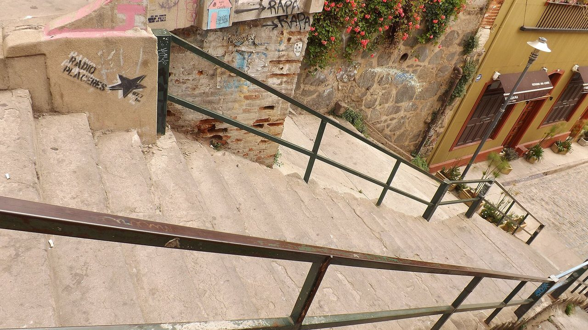

Race, Valparaíso Stairways

Behind
Best +0:01
371W
Target 418 W-47 W
- Cadence
- 87rpm
- Heart
- 140bpm
- Speed
- 26.5km/h
Recover7 of 24
2:49
Next: · 4:00 at level 19
+1.1%
26 m climbed
5.18 km
21
Resistance / 32
Solo races your best-time ghost: position reads Ahead or Behind, and solo alone gets a Pause button. Frozen at 12:11.